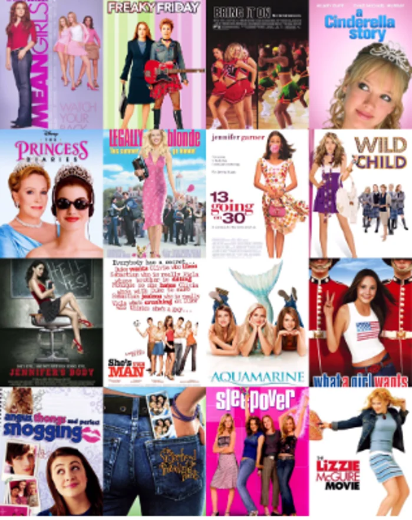

La Era Dorada del Cine
La década del 2000 fue un periodo de grandes cambios y experimentos en Hollywood. Desde el auge de los efectos visuales hasta historias más complejas y oscuras, el cine se redefinió para la nueva era.
Prepara las palomitas y revisa nuestro listado curado de películas que no te puedes perder.
